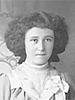
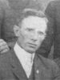
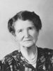
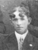
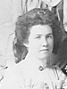
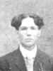
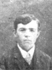
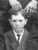
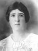
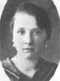

Napoleon Bonapart and Elizabeth Margaret Williams Roundy Family
Home
Histories
Charts
Photos
Maps
Restricted
News
Info
Contact
| <--(return)-- |   | Shadrach Roundy and Betsy Quimby | ----> |   | Lorenzo Wesley and Susannah Wallace  ----> ----> |
 
| Napoleon Bonapart Roundy and Elizabeth Margaret Williams He also married Louisa Jane Higgins |
 | Rachel Susannah Roundy 22 Nov. 1873 - 17 Apr. 1957 Married John Shurtz 2 Nov. 1892 The 1st child of Napoleon Bonapart Roundy and Elizabeth Margaret Williams |
| * | Mary Elizabeth Roundy 3 Nov. 1875 - 12 Aug. 1876 2nd child of Napoleon Bonapart Roundy and Elizabeth Margaret Williams |
|  | Ammon Lorenzo Roundy 26 June 1877 - 30 Aug. 1954 Married Elizabeth Liston 1905 The 3rd child of Napoleon Bonapart Roundy and Elizabeth Margaret Williams |
|  | Johanna Roundy 2 May 1880 - 11 May 1969 Married Peter Orrin Barker 10 Oct. 1900 The 4th child of Napoleon Bonapart Roundy and Elizabeth Margaret Williams |
|  | Rees Jones Roundy 12 May 1882 - 20 Dec. 1955 Married Sarah Rosalie Griffin 14 Nov. 1905 The 5th child of Napoleon Bonapart Roundy and Elizabeth Margaret Williams |
|  | Anice Roundy 23 May 1885 - 5 Apr. 1967 Married Michael Schow 26 Nov. 1903 The 6th child of Napoleon Bonapart Roundy and Elizabeth Margaret Williams |
|  | Wallace Napoleon Roundy 1 May 1888 - 7 Oct. 1977 Married Ella May Griffin 10 Mar. 1909 The 7th child of Napoleon Bonapart Roundy and Elizabeth Margaret Williams |
| Walter Marion Roundy 24 Oct. 1890 - 3 Sep. 1916 The 8th child of Napoleon Bonapart Roundy and Elizabeth Margaret Williams |
|
|  | Albert Ervin Roundy 24 Oct. 1890 - 20 June 1964 Married Adelia Porter 1908 Married Elizabeth Gates Griffin 8 Feb. 1937 The 9th child of Napoleon Bonapart Roundy and Elizabeth Margaret Williams |
|  | Alof Larson Roundy 31 Dec. 1893 - 18 June 1924 The 10th child of Napoleon Bonapart Roundy and Elizabeth Margaret Williams |
|  | Lenora Roundy 20 Sep 1897 - Married Ray Griffin 11 Apr.1916 The 11th child of Napoleon Bonapart Roundy and Elizabeth Margaret Williams |
|  |
Verda May Roundy 21 Jan. 1903 - 20 Mar. 1936 Married Calvin Shurtz 17 Sep. 1919 12th child of Napoleon Bonapart Roundy and Elizabeth Margaret Williams |
Back to Buchanan Family History web pages.